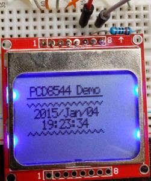

Using F# on a Raspberry Pi
Using F# on a Raspberry Pi
This is how I got F# working on a Raspberry Pi. The demo shows how to communicate with a Nokia 5110 LCD (PCD8544). While simple it does show how to use the wiringPi library, GPIO and SPI.
 Installing mono on the latest Raspbian is easy. Just run the following Command
That should get everything you need.
While there are several tutorials on installing F# on the internet, I’ve chosen to rather compile the F# code on my main machine and copy the compiled assemblies across. I did this for two reasons
- I prefer to work on my main computer, its just faster.
- I’m having issues getting the F# compiler to work 100% on the pi, but given point one I’ve not tried very hard to sort it out.
There are several options for accessing the Raspberry PI GPIO ports. I decided to use WiringPi as it seems to be one of the most popular libraries at the moment. There are a few .NET wrappers for WiringPi but I decided to write my own DllImports because its so easy and I can better control how I want the access to work. To get WiringPi working I followed the instructions from http://wiringpi.com/download-and-install/ Once it is installed you will need to create the shared libraries. To do this run
- cc -shared wiringPiI2C.o -o libwiringPiI2C.so
- cc -shared wiringPiSPI.o -o libwiringPiSPI.so I’ll show you how to use these files shortly.
The Nokia 5110 LCDs are 84x48 pixel LCD screens that are easy to use. There are hundreds of tutorials around so I wont duplicate that effort here. If you want to understand how it works make sure you also look at the datasheet. Wiring will be as follows NB I prefer the GPIO pin numbering over the wiring pi numbering. Remember this when looking at GPIO pin numbers below
| LCD | Pi |
|---|---|
| Reset | gpio 24 (pin 18) |
| CE | CE0/gpio 8 (pin 10) |
| DC | gpio 23 (pin 16) |
| DIn | MOSI/gpio 10 (pin 19) |
| CLK | SCLK/gpio 11 (pin 23) |
| Vcc | + 3.3v (pin 1) |
| Light | gpio 18 (pin 12) |
| Gnd | ground (pin 6) |
Using WiringPi from F# is easy enough. Make sure that the two .so (shared libraries) created above are in the same directory as the compiled .exe. Then you can create DllImport statements for the functions that you want to export. As an example here is how to import the “pinMode” function Rather than just using the raw imports, I chose to create a type safe F# wrapper for the imported functions. For example when setting the pin mode I’d like to have an type for the I/O mode so that it can be type checked rather than using an int. Also I want a simple way to specify the pin I’m using that works with the pin number, GPIO number or wiring pi standard numbering. Here is the full code that does all of that A few things to note
- The DllImport is in a private module.
- I’ve created F# wrappers for the imports that use strongly typed parameters
- I’ve only defined a few of the pins, enough for this demo
See spi.fs
For the PSI imports I defined a few F# wrapper methods that make working with SPI easier. Remember that SPI is full-duplex so however many bytes you write you will get the same number of bytes returned. However quite often you don’t care about the return values, e.g. with the LCD code. So I’ve created a function that does a write and a read (spiWR) and one that “only writes” (spiW) i.e. ignores the result.
For the LCD I wanted to have the following * Communication using hardware SPI using the wrappers defined above * Reasonably efficient, e.g. send multi-byte commands/data in a singe DC/SPI “session” * A simple interface that hides all of this detail Since you may want to wire the LCD different for different projects the pins used must be configurable. To allow for this there is a lcdConfig record that must be passed to each LCD function containing the required settings. This also documents in code how the LCD should be wired. When you start using the LCD you need to created an instance of this record and call lcdInit. lcdInit will initialise the SPI hardware and send all the required LCD initialisation commands. Remember that to communicate with the LCD you first need to set DC high for data or low for a command. For example lcdGoto lcdGoto, sends two commands (DC is low for both). The first command 0x40+row sets the row. The second 0x80+col sets the column Here is the full code
Once all the wrappers are defined the code to interface with the LCD is simple. This demo displays the date and time and updates it every second for ~1 minute,
To build and copy the code to the pi I use the following bash script, which assumes the pi is on IP 192.168.0.73
#!/bin/sh
fsharpc --out:lcdDemo.exe --target:exe --debug+ --debug:full --tailcalls+ --optimize font.fs wipiInit.fs gpio.fs spi.fs lcd.fs lcdDemo.fs && scp -r lcdDemo* pi@192.168.0.73:~/prog/fs/wiringPi_5110_Basic/Make sure you pi a running SSHd. Configuring SSH to allow login using your private key is also a good idea as it means you don’t need to type your password each time you build the code. The sample also contains a Visual Studio solution should you be using Visual Studio or MonoDevelop etc. Make sure you copy FSharp.Core.dll and the two .so shared wiringPi libraries discussed above across to the pi in the same directory as the compiled .exe before your first run.
Overall getting F# working was pretty simple. The performance is great, startup time is fantastic (the JVM was terrible :( ). I hope this helps get you started. Overall I’m really impressed with how well it all works The full code for this demo can be found here: